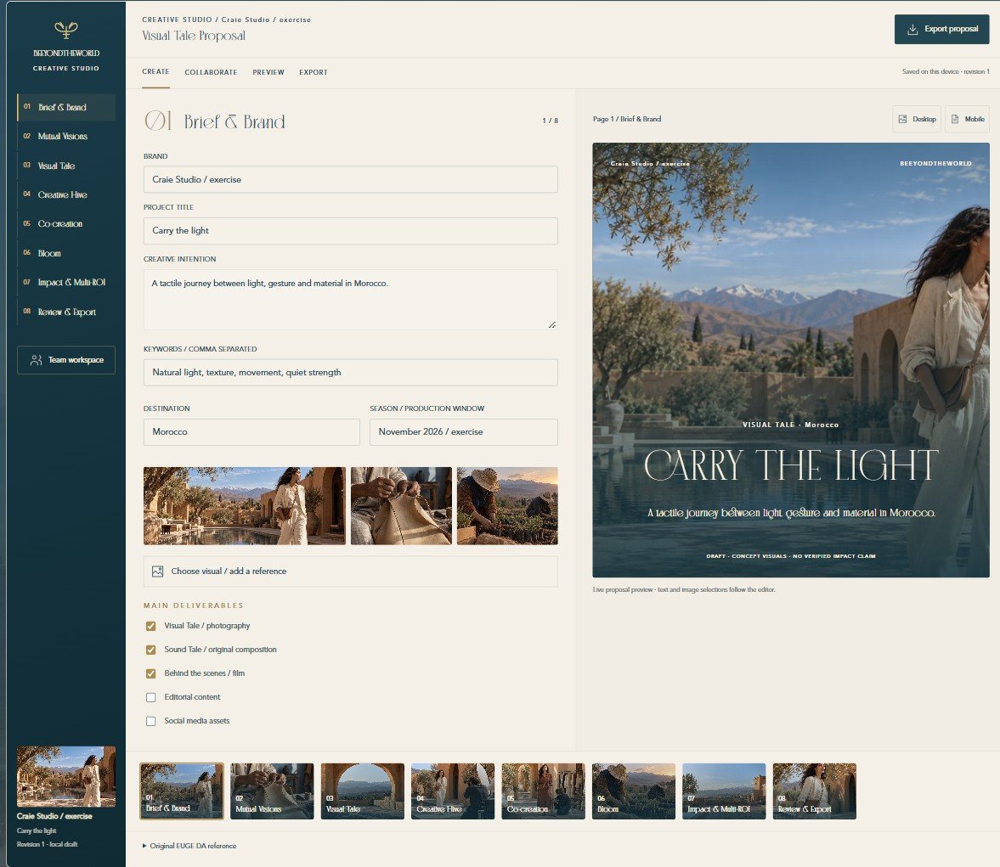
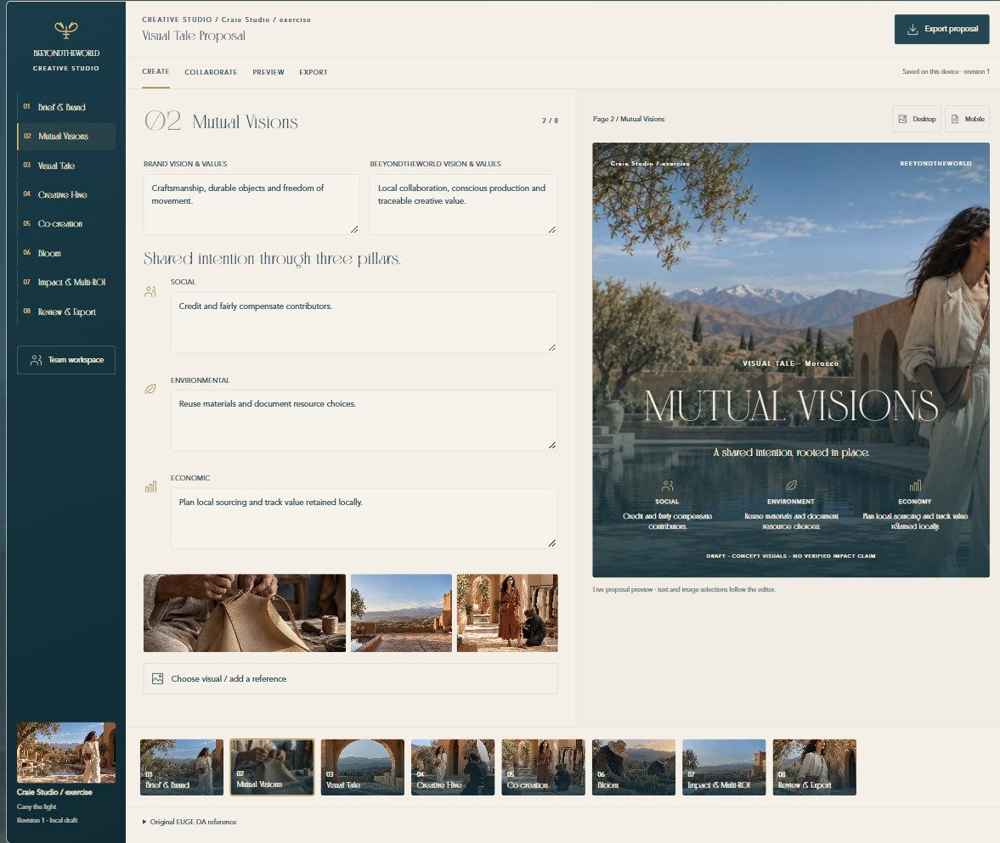
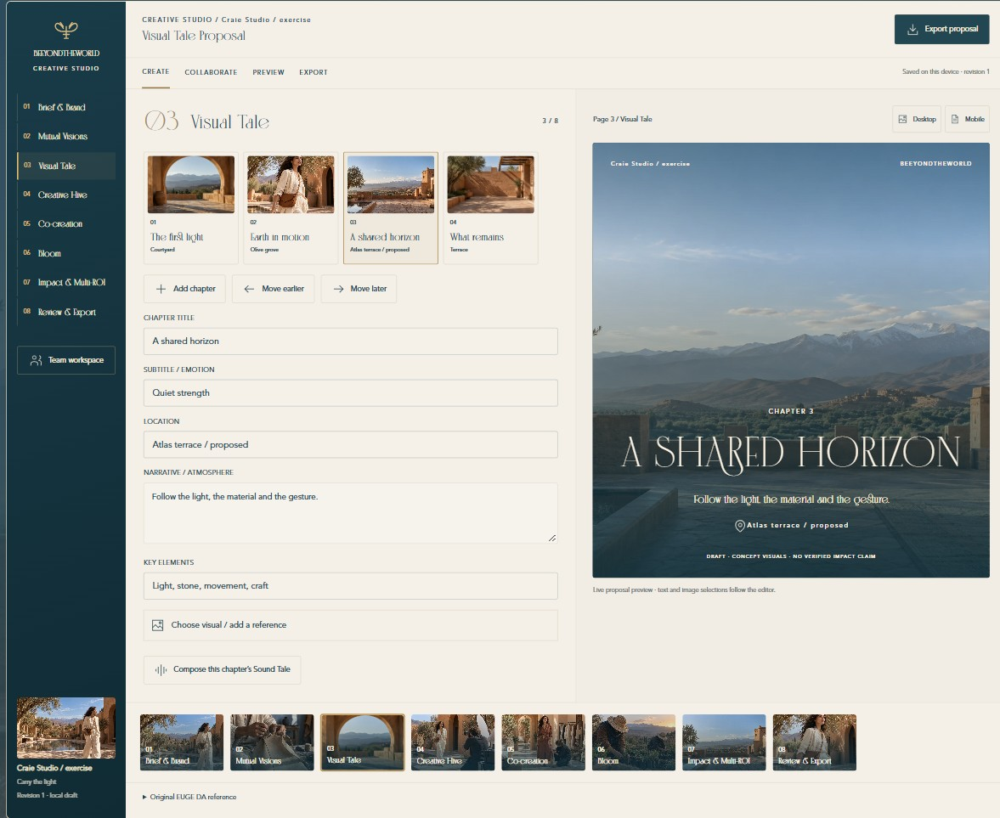
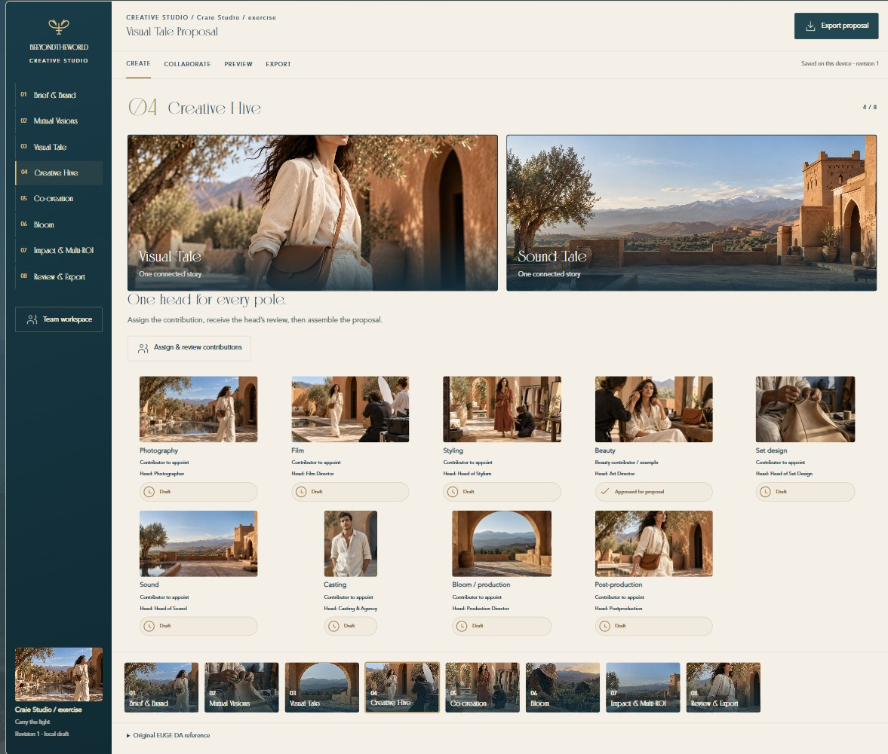
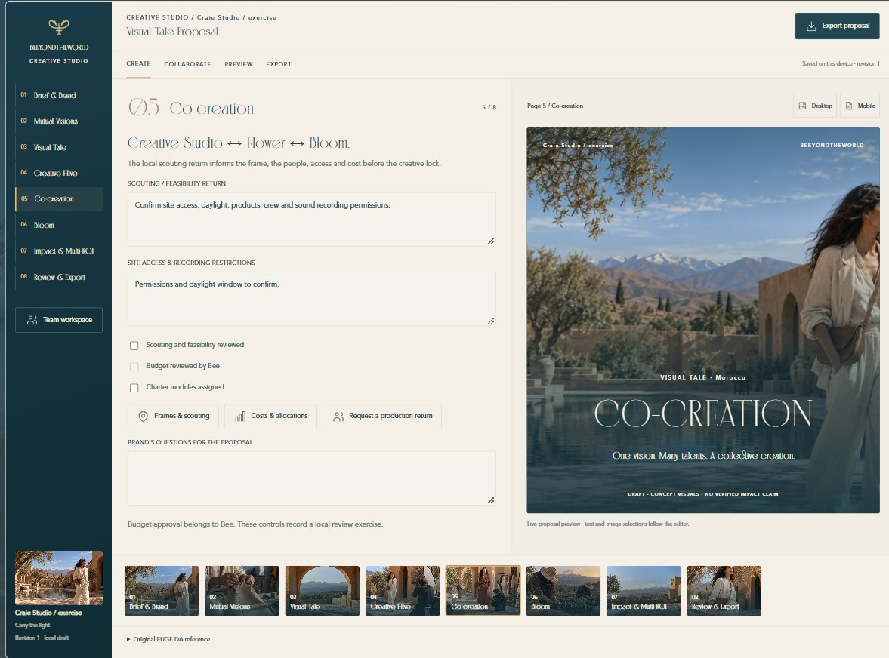
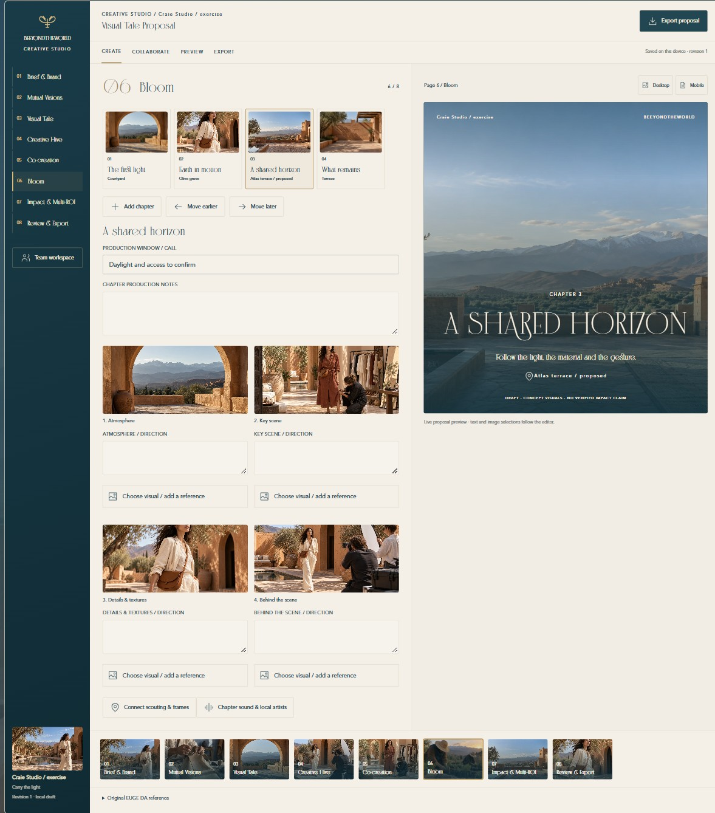
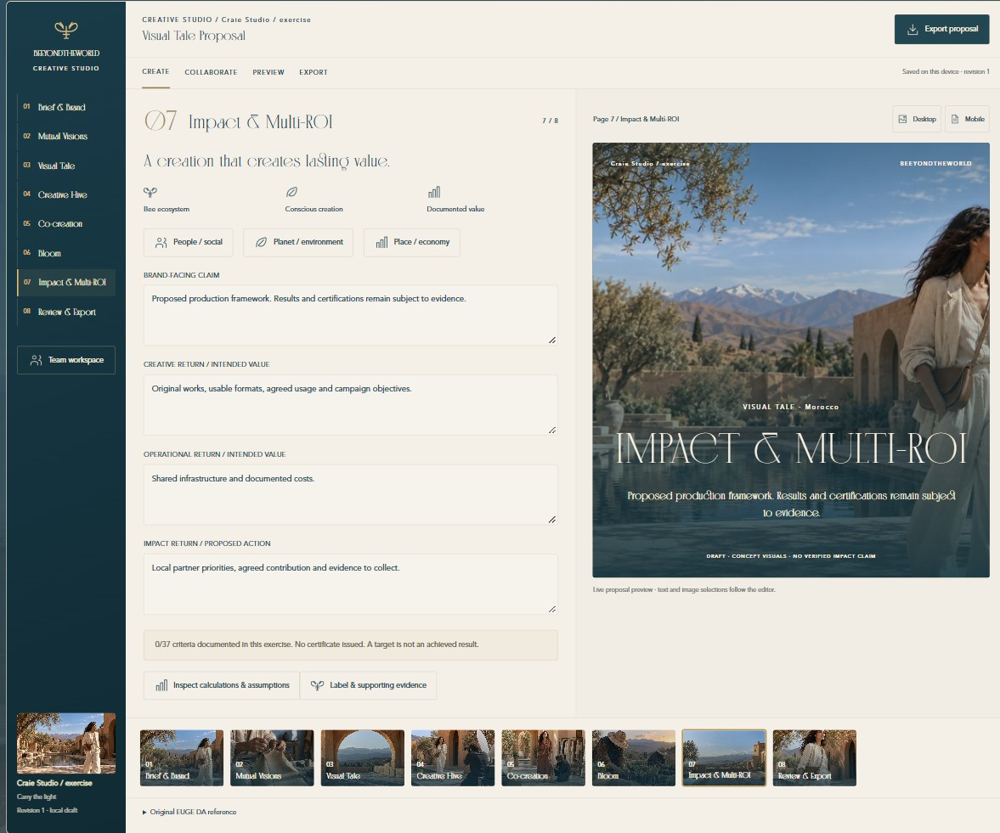
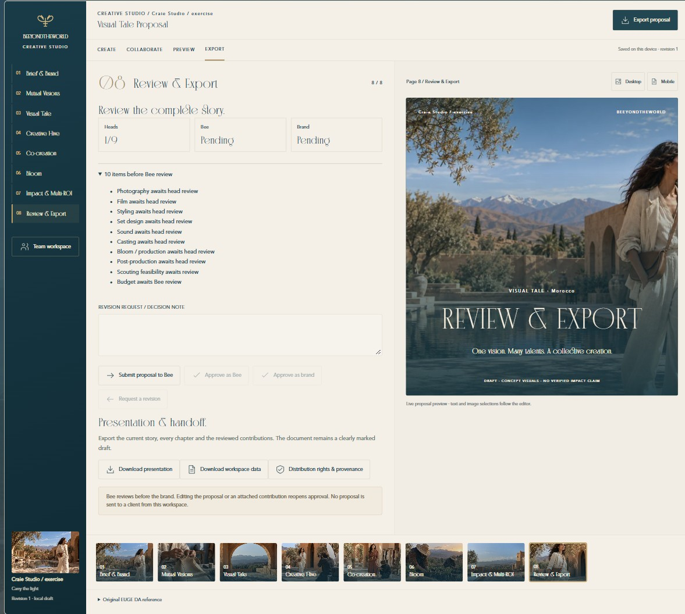
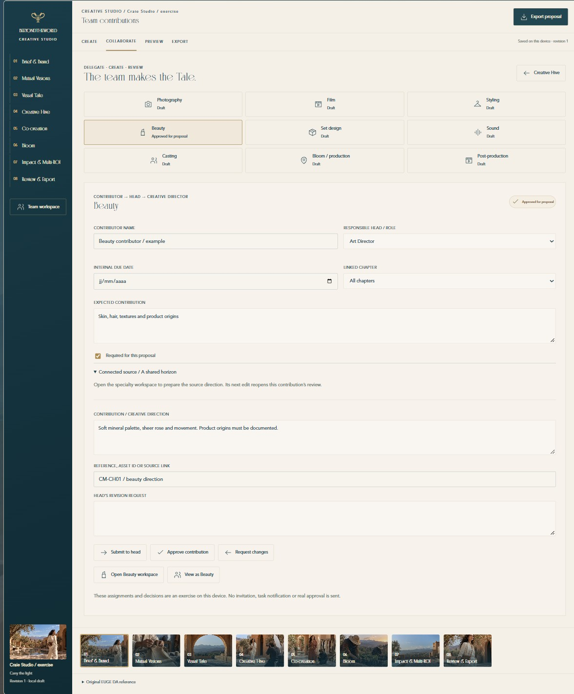
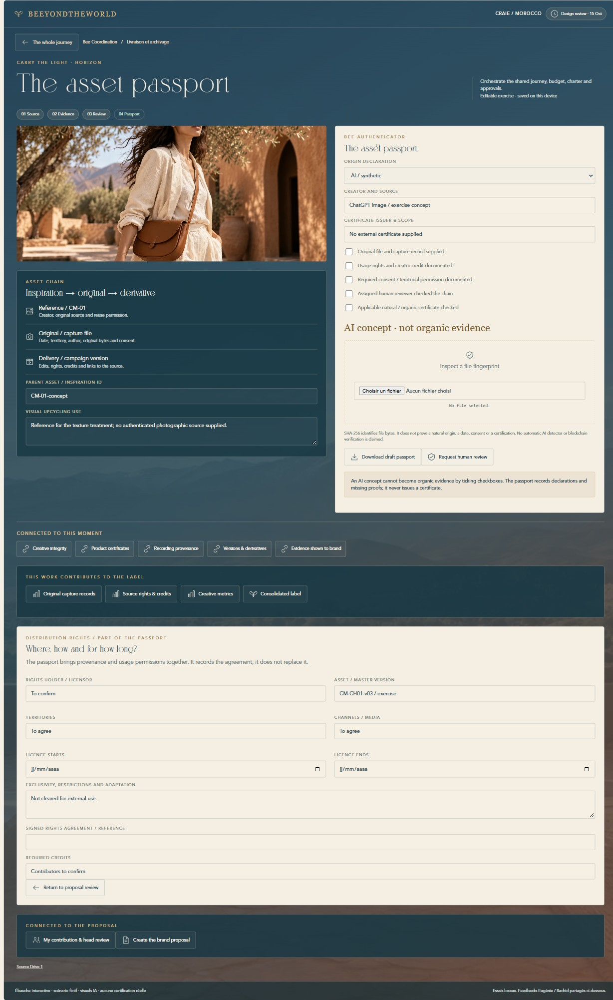

La demande relue
Réponse WhatsApp d’Eugénie du 15 octobre : rendre la création de la proposal délégable, relier les Tales à l’équipe, désigner un head par pôle et clarifier les droits dans le passeport. Le dossier EUGE DA et la présentation SATYA de 41 pages servent de références.
Ce qui change
Les huit pages Tales deviennent un atelier de création, avec navigation verticale, bandeau de vignettes, formulaires et aperçu. Un espace de contributions complète ces huit étapes pour les 15 métiers. Le comparateur contient 951 vues, dont 470 interactives.
Ce qui est réellement partagé
Les feedbacks Eugénie / Rachid et leurs images restent enregistrés sur le VPS avec les mêmes liens et adresses d’écran. Les textes de proposition, fichiers de référence et validations d’exercice restent dans ce navigateur. Ce lot ne crée pas encore des tâches opérationnelles synchronisées entre plusieurs comptes.
Brief & Brand → Mutual Visions → Visual Tale → Creative Hive → Co-creation → Bloom → Impact & Multi-ROI → Review & Export
Contributeur → Head du pôle → Direction artistique → Bee → Marque
Parcours de test
Créer
En Direction artistique, ouvrir Brief & Brand. Modifier le titre, choisir un visuel, puis passer aux visions et aux chapitres. Observer l’aperçu et ajouter un chapitre.
Déléguer
Ouvrir Collaborate. Choisir Beauty, renseigner le contributeur et sélectionner Art Director comme head. Changer le métier affiché vers Beauty ; compléter la contribution et sa référence, puis soumettre.
Revoir
Revenir en Direction artistique. Approuver ou écrire une demande de correction. Le statut apparaît dans Creative Hive. Modifier la contribution ou sa source beauté rouvre la revue.
Finaliser
Compléter les contributions requises et le scouting ; Bee coche la revue du budget. La DA soumet, Bee valide puis la marque intervient. L’export reste un brouillon ; ouvrir le fichier HTML téléchargé et utiliser Print / save as PDF.
Le menu métier change le point de vue dans l’exercice. Il ne change pas votre identité de feedback. Vos commentaires et leurs pièces jointes restent attachés au même écran.
Dix écrans à revoir ensemble
art / ÉCRAN ACTUEL
01. Construire la proposition
Identité marque, intention, mots-clés, destination, saison et livrables. L’aperçu reprend le titre et le texte pendant la saisie. Le visuel de couverture se choisit dans les assets du voyage ou avec une image personnelle.
À manipuler
Formulaires, aperçu instantané, sélecteur d’images, import JPEG/PNG/WebP et navigation visuelle.
Ouvrir et commenter cet écran
art / ÉCRAN ACTUEL
02. Aligner les visions
Valeurs de la marque et de Bee, puis intention commune sociale, environnementale et économique. Le sens donné à la production reste distinct des résultats à prouver.
À manipuler
Édition des valeurs, trois piliers dans la présentation, références visuelles et mode aperçu.
Ouvrir et commenter cet écran
art / ÉCRAN ACTUEL
03. Composer le récit
Chapitres nommés, lieu, émotion et narration. Un chapitre peut être ajouté et déplacé dans le récit. Son identifiant reste stable ; le son et les Bloomboards retrouvent le même chapitre.
À manipuler
Ajouter un chapitre, déplacer, renommer, sélectionner son image, ouvrir sa composition sonore.
Ouvrir et commenter cet écran
art / ÉCRAN ACTUEL
04. Constituer la Creative Hive
Visual Tale et Sound Tale retrouvent leurs grandes cartes. Neuf pôles affichent contributeur, head et état de revue. Les noms sont à désigner ; aucun membre réel n’est invité.
À manipuler
Cartes des pôles, passage à la contribution choisie et accès aux métiers liés.
Ouvrir et commenter cet écran
art / ÉCRAN ACTUEL
05. Relier la DA au scouting
Le retour Flower et Bloom précise accès, lumière, enregistrement, faisabilité et coût. Bee garde la revue du budget ; la marque peut formuler ses questions.
À manipuler
Formulaires de retour, checklist, liens vers frames/scouting, registre des coûts et responsable production.
Ouvrir et commenter cet écran
art / ÉCRAN ACTUEL
06. Préparer les Bloomboards
Chaque chapitre possède quatre vues : atmosphère, scène, texture et coulisses. Chacune peut recevoir une direction et un visuel. Les repérages et le Sound Tale restent accessibles depuis cette étape.
À manipuler
Navigation entre chapitres, quatre planches modifiables, images propres à chaque planche et liens scouting/son.
Ouvrir et commenter cet écran
art / ÉCRAN ACTUEL
07. Formuler la valeur pour la marque
Les trois retours sont explicités : créatif, opérationnel et impact. Les liens conduisent aux calculs et aux preuves des trois piliers. Une intention reste une proposition, sans certification fabriquée.
À manipuler
Édition des arguments, accès aux métriques, aux hypothèses et au Bee Label.
Ouvrir et commenter cet écran
art / ÉCRAN ACTUEL
08. Revoir et exporter
La liste des points ouverts précède la soumission. Les contributions requises, la faisabilité et le budget conditionnent la revue Bee ; la marque intervient ensuite. Une modification rouvre la revue.
À manipuler
Soumission, revue Bee puis marque, demande de correction, export HTML imprimable en PDF et export des données.
Ouvrir et commenter cet écran
art / ÉCRAN ACTUEL
Le travail de chaque pôle
Un espace commun permet de nommer un contributeur, désigner son head, rattacher le chapitre, préciser une échéance et le rendu attendu. Le contributeur soumet texte et référence ; le head accepte ou demande une correction motivée.
À manipuler
Changer de pôle et de rôle, remplir la contribution, soumettre au head, demander une correction, approuver et retrouver le statut dans la Hive.
Ouvrir et commenter cet écran
bee / ÉCRAN ACTUEL
Le passeport inclut les droits de diffusion
La provenance est complétée par titulaire, version, territoires, supports, dates, restrictions, document de licence et crédits. L’export du passeport reprend ces champs. Il ne remplace pas un contrat signé.
À manipuler
Champs de droits et de provenance, empreinte de fichier, export du brouillon et retour à la revue de proposition.
Ouvrir et commenter cet écran
Précisions demandées et périmètre suivant
Noms et périmètres
Question envoyée à Eugénie : heads par pôle et sales à ajouter au CRM, avec leurs emails et périmètres. Aucun accès supplémentaire n’a été créé sans ces précisions.
Vocaux
Les deux vocaux de 10:10 n’ont pas pu être transcrits dans cet environnement. Un résumé écrit lui a été demandé ; les messages écrits et la capture renvoyant au dossier EUGE DA sont traités.
Après validation du parcours
La synchronisation des propositions entre comptes, les invitations opérationnelles, le stockage des originaux et l’audit des validations constituent le branchement métier suivant. L’exercice permet de valider les écrans et règles avant ce branchement.
Références
Dossier EUGE DA · Présentation SATYA · Rapport Creative / Bloom / Label précédent